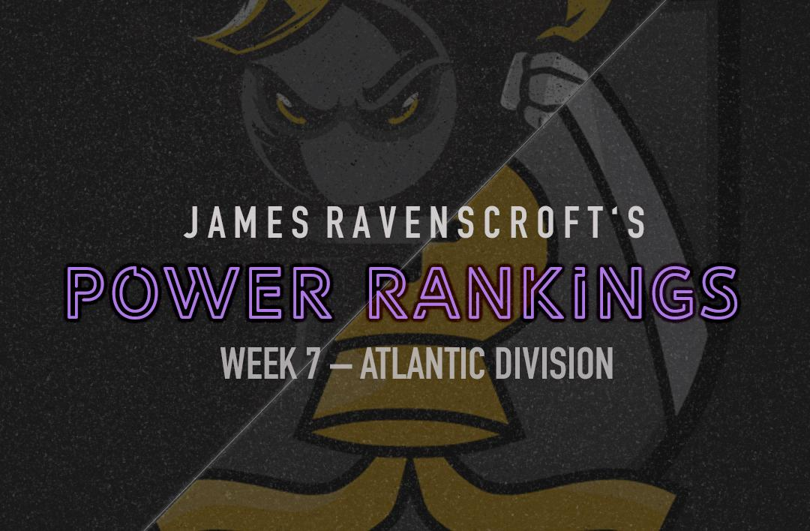

PRO Chess League Power Rankings
Week 7: Atlantic Division

After another point-happy Battle Royale, things are really coming into shape. The Marshalls and Arch Bishops in a tight race for the top spot, the Sopranos and the Chessbrahs (and maybe the Pawngrabbers) are fighting for a playoff spot, and Miami is just trying to avoid relegation. Speaking of Miami, I can't believe how well they played! They dominated their Battle Royale, and actually doubled their point total for the year. It's just a shame that it's happening so late in the season. If this had happened in the first Battle Royale, they might have a realistic playoff chance, but now they are just fighting for a guaranteed spot in the league next season. Next week we get back to divisional play, and you can expect more great chess to come, just like Anish Giri's deadly attack.
PRO Chess League Overview
This year, we will be doing a weekly power rankings list for teams in the Atlantic division. For those of you who don't know, the regular season of the PRO Chess League (PCL) is ten weeks long. Each week, teams will have to pick 4 players from their roster with an average standard rating (not blitz or rapid) of 2500 FIDE or less for each match. Every match consists of 16 games (aside from the Battle Royales) meaning every player plays 4 games, on rapid time control (15 minutes with a 2-second increment). At the end of the match, the winner of the match receives ten points for the win. Each will also earn as many points as points they earned in the match (i.e. If team A defeats team B 10.5-5.5, team A receives 20.5 points and team B receives 5.5 points). This means that every game matters, so even if a team has already lost, there is still reason to keep playing. If anything that I wrote was unclear, you can always see the
PRO Chess League Official Rules for further explanation. I'm looking forward to seeing the rest of the season, and hope you are too!

Want to support the Black and Gold? Be a part of the Pittsburgh Pawngrabbers' journey in 2019! Check out the Pittsburgh Pawngrabbers on Indiegogo to give your support!
1. Saint Louis Arch Bishops
(PR: 3) Points: 148.5
This week was another reminder, if you needed one, of just how good the Arch Bishops are. They competed in what I think is the hardest Battle Royale of the four, with some of the best teams in the whole league, and they came out on top. While Wesley So and Fabiano Caruana both handled business as usual with 5 out of 7, I think the performance that stood out was fourth board Josh Bloomer's 3.5 out of 7. He must be the lowest rated player in PRO Chess league history, and he still managed to go 50% on the day. We all know that Caruana and So are stellar players, but being able to get by comfortably with 3.5 out of 7 on board 4 makes the Arch Bishops look all the more dangerous.
2. Montreal Chessbrahs
(PR: 5) Points: 111
It's about time they decided to put Anish Giri into the lineup! Getting Giri some playing time looks like it was about all this Battle Royale was good for though. They finished in a 3-way tie for 5th, meaning they get 6 points added as if they finished 6th, and I'm left feeling like they should've done better. Giri put up 5.5 out of 7, but the rest of the team fell completely flat. They stayed close with Montclair thanks to the Sopranos 6th place performance, but I'm still not convinced that the Chessbrahs are out of their slump that dropped them from first all the way to fifth. At least Giri got some games in, so they know they can use him in lineups for the rest of the year. The Chessbrahs have loads of talent that I know would make them a volatile threat in the playoffs, but right now they aren't playing well.
3. Webster Windmills
(PR: 2) Points: 131
This was not the Windmills best day, but they still hold a comfortable third place standing in these power rankings. They competed in the hardest Battle Royale with some really, really good teams so I think it's understandable that they didn't excel. On a positive note, Ray Robson had another good day, scoring 5 out of 7. Even though they didn't put up the kind of numbers that they would like, they still feel like a very good team that will be tough to take down in the playoffs. I'm not sure that they will move up or down for the rest of the season, with the Arch Bishops 17.5 points ahead of them and the Sopranos 16.5 behind. They just need to make sure that they are playing high-quality chess heading into the playoffs.
4. New York Marshalls
(PR: 1) Points: 149
After a strong second place finish in this week's Battle Royale, I think it's fair to say that this team is for real. The skeptics have been silenced, as they showed up their middling 6th place performance last Battle Royale with a second place finish this time. Grant Xu scored 6 out of 7, and though board 4's get easier opponents than board 1's in these Battle Royales, 6 points are 6 points. As we look ahead to the playoffs, I think it's going to be important to try to be the first seed rather than the second. It feels like there is a bit of a drop off following the top three, and New York would be well off if they did not have to face one of them. For now, they hold a slim ½ point lead over the always-dangerous Arch Bishops.
5. Montclair Sopranos
(PR: 4) Points: 114.5
With Moscow Phoenix forfeiting all of their games, they were practically gifted 6th place. They disappointed by not being able to do better given that they automatically beat one team, and I think this team has really shown its mediocrity in the past few weeks. Nonetheless, they are holding onto a playoff spot by 3.5 points, and I'm not sure who will take it from them. I think it's becoming increasingly obvious that they need to find a fourth board given that outside of Sevian and Lenderman, they haven't been able to find consistently good performers. I think the best plan would be to go with Nicolas Checa and Carissa Yip, but that's just the opinion of one guy. Whatever they do, they need to find a way to start scoring well at the bottom.
6. Pittsburgh Pawngrabbers
(PR: 6) Points: 90
The Pawngrabbers should feel fortunate that they walked out of the Battle Royale in a 3-way tie for 5th place. If it weren't for that heroic 4-0 final round, they would be in a much worse position. That being said, WHAT A COMEBACK! The Pawngrabbers showed their grit and determination by grinding out a final round performance that shows how this team never quits. Tuan Minh Le had his second great Battle Royale, scoring 5 out of 7, and though the rest of the team went under 50%, it was enough to keep them competitive. I think that the playoffs are definitely still a possibility, and although they didn't make up any ground (they actually made up a 1/2 point on Montclair), they didn't lose any either. If they can get the upset against the Arch Bishops—I understand that's asking a lot, but that's what it's going to take—then I like their chances. It's going to take a great game plan, some great preparation, and a great team performance on all four boards, but I believe that we get it done.
7. Miami Champions
(PR: 8) Points: 82
Umm…am I reading this right? Yes? Wow. The Champions, despite being winless in division play, managed to dominate the competition and claim first place in their Battle Royale. A week after I called them possibly the worst team in the whole PRO Chess League, they proved me wrong in a huge way. Iturrizaga was once again the rock of the team, scoring 6 out of seven, but he wasn't the only one who came up big. Eljanov and Wang put up a combined 10 points to finally give Iturrizaga some help. With this great performance, they put a little pressure on the Pawngrabbers to keep playing well. The Champions may be able to avoid relegation, which is a huge step up from where they were just a week ago, where relegation seemed a certainty.
8. London Lions
(PR: 7) Points: 69.5
With the sudden surge of the Champions and Pawngrabbers, the Lions' fate is probably sealed. They would have to play tremendously over the last three weeks and given their uninspiring performance in the Battle Royale, I'm not so sure that will happen. None of their players have really stood out this season, with most of them being at best average. This season has been a tough seven weeks for Lions fans, but unfortunately, it doesn't look like it's going to get any better. You should enjoy it though because next season we might not even see the Lions.